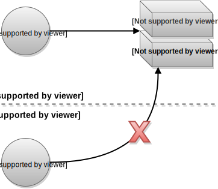
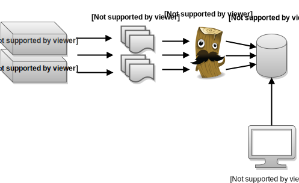
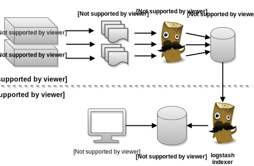

Motivation
Ops @Novomind: Shell Zugriff
Devs @Frontline: keinen Shell Zugriff
ELK stack

ELK mit broker
Logstash
Logstash plugins
input
- file
- redis
- stdin
- syslog
- heroku
- ...
filter
- grok
- multiline
- geoip
- useragent
- csv
- ...
output
- elasticsearch
- redis
- statsd
- graphite
- irc
- ...
logstash plugin documentation (logstash.net/docs/1.4.2)
community plugins (github.com/logstash-plugins)
community plugins (github.com/logstash-plugins)
logstash config
# simple.conf
input {
stdin {
}
}
output {
stdout {
codec => rubydebug
}
}
echo "Hello Logstash" | ./bin/logstash -f simple.conf
{
"message" => "Hello Logstash",
"@version" => "1",
"@timestamp" => "2015-03-15T10:00:42.149Z",
"host" => "jfischer-mac"
}
Logstash Shipper @ Frontline
input {
file {
path => "/var/logs/ishop_logstash.log"
type => "ishop_logstash"
codec => "json"
}
}
filter {
}
output {
if [type] == "ishop_logstash" {
redis {
host => "redis"
data_type => "list"
key => "ftl-app-ishop-logstash"
}
}
}
keine Filter im Shipper
Logstash Indexer @ Frontline
input {
redis {
host => "redis"
type => "ishop_logstash"
key => "ftl-app-ishop-logstash"
data_type => "list"
codec => json
add_field => { "source_host" => "live" }
}
}
filter {
if [source_host] == "live" and [type] == "ishop_logstash" {
mutate {
rename => [ "ipaddr", "ip" ]
}
}
}
output {
if [source_host] == "live" {
elasticsearch_http {
host => "elasticsearch"
}
}
}
probleme
grok
- komplexe Regex
- performance
multiline
- multithreading
- performance
- logstash-indexer stirbt
- Echtzeit geht verloren
- Logs gehen verloren